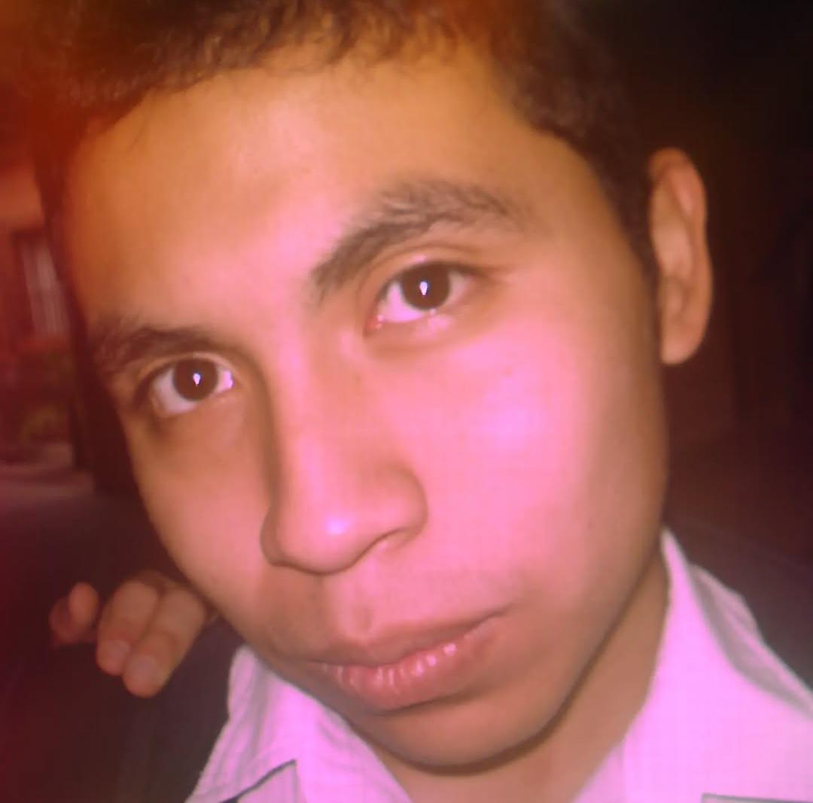

Soy Fernando David Choc Baltazar, un chico de 17 años de edad, que se esfuerza por lograr sus metas, alguien apasionado que siempre sigue hacia adelante, siempre inspirado y motivado con la ayuda de Dios, mi familia y mis seres queridos.
Superarme. Debo confesar que el año pasado tuve muchos problemas debido a mi bajo rendimiento y sé que si me hubiera esforzado más hubiera sido diferente. Este año 2025 quiero ser mejor que el año pasado, quiero esforzarme y terminar este ciclo escolar de una manera satisfactoria.
Planeo dedicarle hasta 50 horas a la semana si es necesario. Quiero esforzarme, estudiar y prepararme correctamente este año.
Ante todo quiero aprender un poco más y volverme mejor en programación. Mejorar en esa habilidad sería lo más importante ahora.